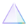
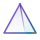
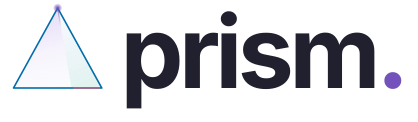
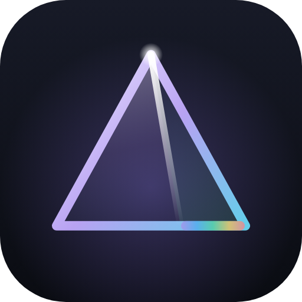
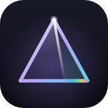
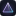

FIG. 003 / IDENTITY · THE GLASS PYRAMID
The website's prism, elevated: a true square pyramid of clear glass that turns slowly in its own light. A key light sits up-left; each face shades as it turns, each edge throws a specular glint as it crosses the light, and the apex holds a point of white. CSS only — transform and opacity on the compositor — from a 20px top-bar mark to a hero or loading screen.
ONE SOURCE · ENDLESS EXPRESSIONS
01 / ANIMATED MARK · prism-mark.css
02 / DAY · the same glass on pearl
03 / STATIC MARKS · prism-mark.svg · prism-mark-mono.svg


prism-mark-day.svg · prism-lockup-day.svg


04 / ICONS · favicon.svg (follows the tab strip's color scheme) · favicon-32/16.png · apple-touch-icon.png · prism-icon-512.png



05 / LOADING · the hero mark alone, with a beam for progress
06 / USAGE
<link rel="stylesheet" href="prism-mark.css"> <!-- inline it in Prism.html -->
<span class="prism-mark" style="--pm:24px" aria-hidden="true">
<span class="pm-rotor">
<span class="pm-face"><i class="pm-rim"></i><svg viewBox="0 0 100 100" preserveAspectRatio="none"><path d="M0 100 50 0M0 100h100"/></svg></span>
<!-- …the same .pm-face three more times… -->
<i class="pm-apex"></i>
</span>
</span>
--pm box size (20–40px top bar · 120–320px hero/loading)
--pm-turn seconds per revolution (16s; is-hero 22s)
.is-small ≤ 24px: 1px edges .is-hero pool light + four-point apex star
.is-day Day palette (also automatic under [data-rf-mode="day"] / [data-theme="prism-light"])
.is-still pause (e.g. when the tab is hidden) prefers-reduced-motion: rests at a 3/4 view
Clear space: half the mark's width on every side of the lockup. Minimum sizes: animated 20px, static 16px (favicon art below 20px). The mark is always clear glass: never fill it solid, recolor it outside the spectrum, or rotate it off its vertical axis. The lockup is Inter Bold outlines tracked −0.045em, matching the site; the dot is the accent.